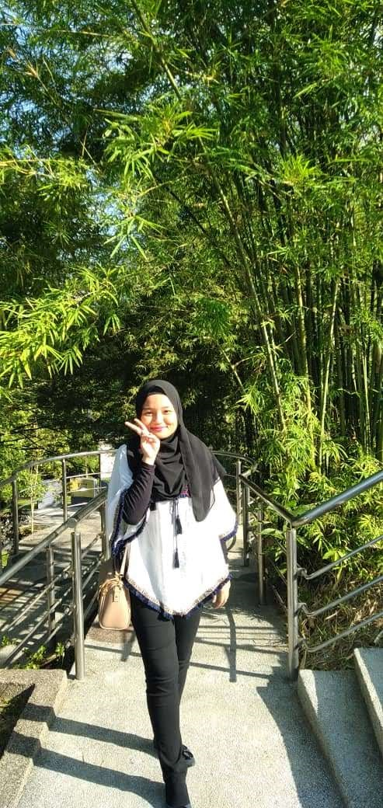

WHO IS ME?
My name is Ika Farah Hana Binti Mohammad Alwi. My family call me Farah, while my friends call me Ika and for special case special person they call me Hana. So, basically, I have 3 nicknames but mostly the name Ika is more popular that people call me. I am cute and beautiful 21 years old female.
Next about me is I was born on 5 October 2000, in the Labuan federal-provincial hospital. I am the youngest of two siblings and I have one sister that is one year older than me. So, we are not much different since we just different one year. Furthermore, I am Malaysia citizen and I live in Selangor but actually I am from Sabah. So, why I live in Selangor, it is because my parents divorce when I was 2 years old, so my grandparents took me and my sister to migrate to Selangor to start a new life with a better future because at that time my mother was already in Selangor. Therefore, I am being live in Selangor for almost 20 years .
Apart from that sad story, I still have a beautiful and loving family. I have my mom, my grandpa and grandma and I also have my sister. A little family but full of warm love. Next, about my characteristic is I am a very cheerful person and I love animals very much. I have two cat which is one is female and another one is male and I also have 5 big turtle where I have taken care of them for about 12 years from my age of 11 years old and I also have one beautiful aquarium full of fish. Besides, I am a spoiled but yet an easy-going person with everyone, but I am also a bit shy person too.So, people who know me well will know how I am.
As a human being I confess that I am not perfect, and I have many weaknesses. But to be better a person in the future I will try my best to overcome my weakness. For example, I love accepting challenges in my life, but I find out that I will easy to give up in going through those challenges. I need someone to always give me positive word and give me support and courage me to finish the challenges. Besides I also easily feel down or discourage when hearing negative words from people around me especially when they insult me. But, in fact, there is nothing to feel down sometimes it is just my emotions itself and as a girl I will feel insecure about myself. By the time is past I learn that every person is beautiful either with face or heart. Therefore, even though I have many weaknesses, but I know that I can change my attitude so that my weakness can become my strength. An Unknown person has said that "you are born to be real and not to be perfect" so that is all about myself.